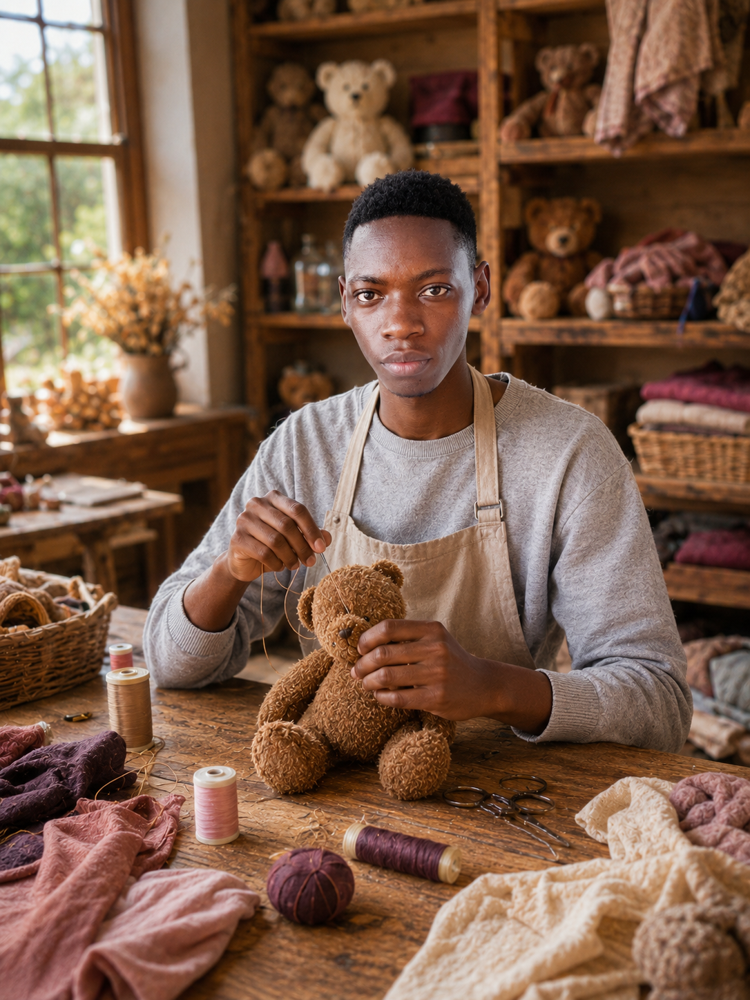

Our Story
Des-Lux Play was born in 2020 when founder Des-J Sekgobela began hand-stitching stuffed toys in a small workshop in Burgersfort, Limpopo. What started as a passion project for family and friends quickly grew into a beloved brand known for quality, creativity, and heart.
Today, Des-Lux Play ships nationwide, offering everything from classic teddy bears to fully customized fantasy creatures, all while maintaining the personal touch that made the first toy special.
Our Mission
To craft luxurious, imaginative stuffed toys that bring comfort and joy to every customer, while dedicating 10% of all profits to supporting children's charities across South Africa.
Our Vision
To become South Africa's most trusted luxury stuffed toy brand — where exceptional craftsmanship, limitless customization, and social responsibility come together.
Our Charity Commitment
We partner with local orphanages in Limpopo, school feeding schemes in Mpumalanga, and pediatric care initiatives across Gauteng. When you buy a Des-Lux toy, you are not just buying a gift — you are giving hope.